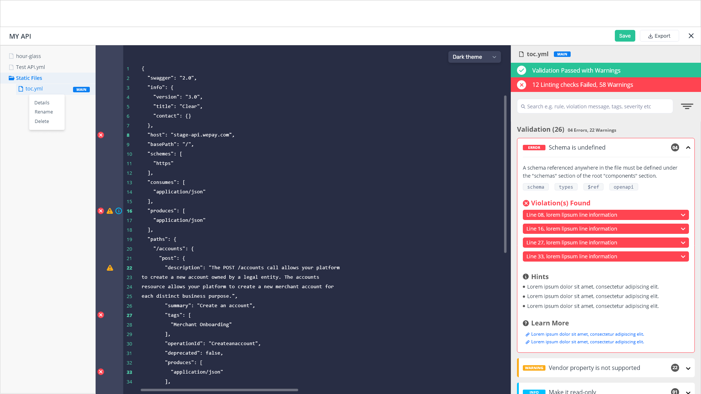
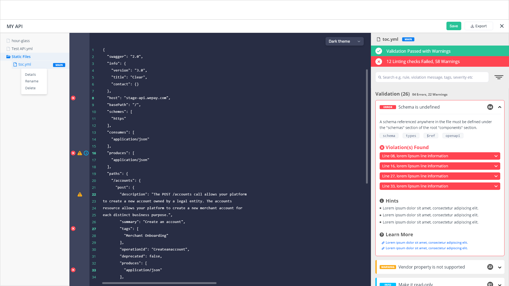

Revolutionizing the user experience of APIMatic's product with seamless features, while also enhancing the developer experience within the API realm.
APIMatic is a Developer Experience platform tailored for APIs. Our primary objective is to enhance developer productivity through automatic code generation and a comprehensive suite of DX components, including auto-generated SDKs, an API portal, API documentation, live code samples, and more. As the lead for product design enhancements, I am dedicated to refining our product and eliminating any user frictions to ensure an optimal user experience.
- MY ROLE
- User Research
- Journey Mapping
- Wireframing
- Interaction Design
- Screen Flows
- Visual Design
- PLATFORMS
- Web (Cloud based)
- YEAR
- 2021-2024
- More Details
- Official Website
Problem
Numerous users have reported issues regarding user experience and usability problems with our product, as identified through user research.
Key drivers
Users have expressed confusion while navigating certain available options within the product, and at times, they've reported difficulty in discovering flows and components.
- User's feedback
- We collected user feedback directly through interactions with the customer success team, enabling us to extract valuable insights from our users.
- Insight tools
- We employed various tools such as MixPanel, Google Analytics, and Clarity to gain a comprehensive understanding of user pain points.
- Competitive analysis
- A thorough analysis of competitors' approaches to handling specific use cases and potential enhancements.
- Journey mapping
- This approach provided valuable insights into the user flow, aiding our understanding of user behavior.

Learning about our users
The user experience of our users is our top priority because any disruptions in their experience can lead to frustration. To understand their pain points, I delve into insights and metrics using various tools.

With the Mixpanel tool, I extracted user flows and usage patterns through funnels and cohorts. This method enables extraction tailored to the user's flow and specific use-case. The data provided valuable insights, assisting our team in understanding core issues and identifying opportunities across different stages.
To conduct further testing on certain options, we utilized the Clarity tool by Microsoft. This platform facilitated a deeper understanding of user behavior, pinpointing pain points and user preferences. Its array of tools, including session replays and heatmaps, allowed us to identify areas of user friction and engagement. Additionally, it supported us in leveraging user research and A/B experimentation.


Journey mapping
Drawing from in-person feedback, surveys, and reviews, I organized the data into a journey map. This process enabled me to pinpoint pain points and areas for improvement across the journey. Furthermore, it facilitated discussions aimed at understanding knowledge gaps and generating ideas among team members and stakeholders.
Design system
To establish a single source of truth, we developed and managed a design system. This system enables teams to design, collaborate, implement, and enhance the product seamlessly. Beginning with a foundational design system, we continuously evolve and update it over time to ensure its relevance and effectiveness.
DX Analytics
DX Analytics stands as a distinctive tool crafted in-house by our engineering and design teams. It empowers users to analyze the performance of their API documentation via the DX Analytics dashboard, offering key metrics such as API Portal page visits, SDK downloads, time to first "Hello World," and more. Leveraging user research, we meticulously implemented all necessary insights to enhance the user experience.


Email journeys
When users sign up on the APIMatic website, they're prompted to go through a quick walkthrough. However, many users tend to skip this step to quickly dive into the product. To address this, our design and content teams collaborated to develop various email journeys. These journeys deliver customized emails tailored to users' usage patterns and flows, allowing them to learn more about the product at their own pace. Leveraging Autopilot journeys, we meticulously crafted user flows with personalized guides and featured emails to enhance user engagement and understanding.
Project Titan 1.1 (Docs Editor)
Numerous enhancements were made to the product, with a significant focus on the Docs Editor. I invested over 100 hours sketching various ideas and collaborating with my team on brainstorming sessions. Together, we developed low-fidelity wireframes and prototypes to test with both users and internal teams. Our efforts encompassed a range of features aimed at enhancing existing flows and improving user experience across the board.


DX Portal (v3)
The DX Portal, or Developer Experience Portal, is a comprehensive, no-code platform designed to elevate developer experiences. It encompasses language-specific API documentation, dynamic code samples, live authenticated API calls in a real-time API playground, downloadable SDKs in all languages, and more. The major features I worked on include the Get SDK UI/UX Design, DX Portal Search, New Language Selector, SDK AI Chat Bot, and Multiple Authentication. Collaborating closely with the engineering team, I spearheaded efforts to enhance its user experience by minimizing frictions and introducing numerous new features. This involved extensive hours of wireframing, creating mockups, and conducting thorough user testing to ensure optimal functionality and usability.

API Validator
APIMatic tool performs some preliminary checks on the user-provided API specification document to ensure that it meets the basic requirements for generating a valid output during SDK and Portal generation. For that, our transformer team enhanced its capability from basic check to advanced controlled product, in which users can make quick changes in more controlled ways before proceeding. I led its first class concept via wireframes and created mockups with user flows and features.
 


APIMatic's official Website & Blog
I took charge of our official APIMatic website, originally designed on HubSpot, after its development by a third-party vendor. Following its deployment, I meticulously managed over 500 components, focusing on UI design, CSS adjustments, and JavaScript enhancements. Additionally, I dedicated efforts to optimizing its SEO performance using Google Analytics, Google Search Console, and ahrefs tools.

SOME of my OTHER mvp work...

SpeekIO Marketing Website
End-to-end UI/UX design with markup writing for Embrace-IT Denmark.

InLogic School Management System Integrated with Microsoft Teams
Complete UI/UX design with markup writing for Inlogic Denmark. Client shared his pin-pointed pain points they were experiencing with the current limited system so I started it directly in markup by using Bootstrap because scope and requirements were clear and straight-forward.

InLogic School Management System Redesigned Portal
Complete UI/UX with markup designed for Inlogic Denmark. Client wanted to upgrade their exisiting portal to new framework and wanted to integrate new components so I designed it using Bootstrap.

EasyBrand Marketing Website
Complete UI/UX with markup designed for EasyBrand (Optimentor) Denmark

EasyBrand Admin Portal
Complete UI/UX with markup designed for EasyBrand (Optimentor) Denmark. Client's requirement and scope was clear and well-defined so I wrote its markup using Bootstrap framework.

EasyBrand Client Portal
Complete UI/UX with markup designed for EasyBrand (Optimentor) Denmark. Client's requirement and scope was clear and defined so I wrote its markup using Bootstrap framework.

Gyldendal Free Order Module
Complete UI/UX design with markup for Gyldendal - Book publisher of Denmark. Client required to add some features in their exisiting portal so I wrote it's markup to support required features.

Gyldendal Order Management Module
UI/UX of order steps and tweaks with markup designed for Gyldendal - Book publisher of Denmark. Client wanted to implement order steps process in their portal so they can show information of the product for their clients. I wrote its markup for the required feature.

Optimentor Marketing Website
Complete UI/UX design with markup for Optimentor Denmark. Client wanted a fresh design of their marketing website so I wrote its markup by using Bootstrap framework.

Knot Game Project (Android & iOS)
I entirely designed all the assets by using Photoshop for the game components. Client wanted a new and fresh look of the game.

Umall App (Android) for Ufone - 2015
UI/UX app design for Ufone Pakistan. Client wanted a simple shopping app for their customers so I designed it by using Photoshop because exporting assets for app were required as well.

Data Anonymyzer
Data anonymyzer app which anonymyze exisitng data according to GDPR policy. I was responsible for UI/UX design at Synergy-IT.